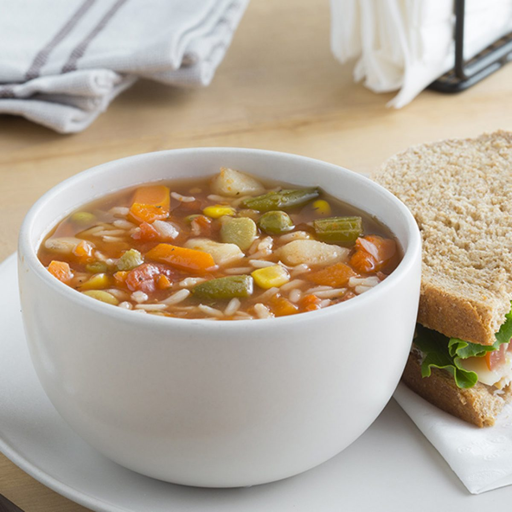

دجاج مشوي
المكونات:
- 4 صدور دجاج
- 2 ملعقة كبيرة زيت زيتون
- 1 ملعقة صغيرة بابريكا
- 1 ملعقة صغيرة مسحوق الثوم
- ملح وفلفل حسب الذوق
الخطوات:
- سخن الشواية على حرارة متوسطة.
- اخلط زيت الزيتون والبابريكا ومسحوق الثوم والملح والفلفل في وعاء.
- ادهن الخليط على صدور الدجاج.
- اشوِ الدجاج لمدة 6-7 دقائق على كل جانب حتى ينضج تمامًا.
الأرز بالنكهات
المكونات:
- 2 كوب أرز
- 4 أكواب مرق دجاج
- 1 بصلة مفرومة
- 2 ملعقة كبيرة زبدة
- 1 ملعقة صغيرة كركم
الخطوات:
- اغسل الأرز جيدًا وصفيه.
- في قدر، قم بإذابة الزبدة وقلب البصل حتى يصبح ذهبيًا.
- أضف الأرز والكركم وحرك جيدًا.
- صب مرق الدجاج واتركه يغلي.
- خفض الحرارة، غطِ القدر، واتركه يطبخ لمدة 20 دقيقة.
يخنة اللحم

المكونات:
- 500 غرام لحم مكعبات
- 2 بطاطس مقطعة
- 2 جزرة مقطعة
- 1 بصلة مفرومة
- 3 أكواب مرق لحم
الخطوات:
- سخن الزيت في قدر وقلب اللحم حتى يصبح بنيًا.
- أضف البصل والجزر والبطاطس وقلب لمدة 5 دقائق.
- صب مرق اللحم واتركه يغلي.
- خفض الحرارة واتركه ينضج لمدة ساعة.
شوربة الخضار

المكونات:
- 1 كوب كوسة مقطعة
- 1 كوب بطاطس مقطعة
- 1 كوب جزر مقطع
- 4 أكواب مرق خضار
- 1 بصلة مفرومة
الخطوات:
- في قدر، سخن الزيت وقلب البصل حتى يذبل.
- أضف الكوسة، البطاطس، والجزر وقلب لمدة 5 دقائق.
- صب مرق الخضار واتركه يغلي.
- خفض الحرارة واتركه ينضج لمدة 30 دقيقة.